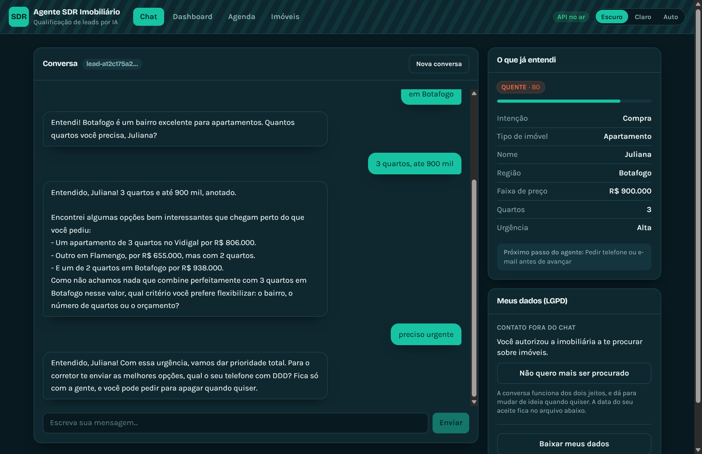

Uma imobiliária recebe leads pelo site, pelo portal e pelo WhatsApp. A maior parte deles nunca vira nada, e o corretor não tem como saber quais valem uma ligação sem conversar com todos. O SDR, sigla de Sales Development Representative, é a pessoa que faz esse primeiro filtro: descobre o que o cliente quer, qualifica, e entrega ao corretor apenas quem está pronto.
Este projeto é um SDR de software. Ele conversa com o lead, extrai as informações que definem a oportunidade, sugere imóveis do catálogo, marca a visita, e entrega ao corretor uma ficha pronta com nota e próxima ação.
O sistema é dividido em quatro módulos, cada um com responsabilidade própria. Eles rodam juntos, mas foram escritos para serem entendidos separadamente.
| Parte | Pasta | Do que cuida |
|---|---|---|
| 1. Agente de IA | ai-core/ | Conversa com o lead e extrai dados da fala |
| 2. Memória e RAG | ai-memory-rag/ | Lembra do lead, busca imóveis, calcula o score, decide o follow-up |
| 3. Backend | backend/ | API HTTP, banco de dados, agendamentos, job de retomada |
| 4. Frontend | frontend/ | As telas: o chat do lead e o painel do corretor |
O caminho de uma única mensagem atravessa as quatro:
Lead escreve no chat (Parte 4)
|
v
Backend recebe em POST /chat (Parte 3)
|
v
Memoria absorve a mensagem e mascara os dados pessoais (Parte 2)
|
v
RAG busca imoveis compativeis com o perfil (Parte 2)
|
v
Agente escreve a resposta, com o contexto (Parte 1)
|
v
Memoria grava o que mudou e recalcula o score (Parte 2)
|
v
Tela mostra resposta, etiquetas, perfil e imoveis (Parte 4)O sistema tem duas experiências no mesmo endereço.
A tela do lead (/), que é o chat, é o que um
cliente da imobiliária veria. As telas do corretor
(/painel) são o dashboard com os leads qualificados, a ficha de
cada lead, a agenda de visitas e o catálogo de imóveis.
As duas convivem porque isto é uma demonstração acadêmica, e ver os dois lados ao mesmo tempo é justamente o ponto: você escreve no chat e observa o painel reagir.

| Programa | Versão mínima | Versão em que foi testado |
|---|---|---|
| Python | 3.11 | 3.11 |
| Node.js | 20 | 24.19 |
| npm | 10 | 11 |
Abra o PowerShell e rode, na raiz do projeto:
cd "D:\Projects\Pos\Fase 05\Tech-Challenge-FIAP-FASE5"
python --version
node --version
npm --versionVocê deve ver três linhas com números iguais ou maiores que os da tabela acima.
Python. Baixe em
python.org/downloads e marque
a caixa Add Python to PATH durante a instalação. Sem essa caixa
marcada, o comando python não é reconhecido no terminal e você
vai precisar digitar o caminho completo toda vez.
Node.js. Baixe a versão LTS em nodejs.org. O npm vem junto, não precisa instalar separado.
Feche e abra o PowerShell de novo. O terminal lê o PATH quando abre, então um terminal que já estava aberto continua sem enxergar o programa recém-instalado.
O projeto usa um ambiente virtual próprio, para não misturar as bibliotecas dele com as do resto da sua máquina.
cd "D:\Projects\Pos\Fase 05\Tech-Challenge-FIAP-FASE5"
python -m venv .venv
.venv\Scripts\python.exe -m pip install --upgrade pip
.venv\Scripts\python.exe -m pip install -r backend\requirements.txtA última linha instala tudo que as quatro partes precisam: FastAPI, uvicorn, SQLAlchemy, Pydantic, APScheduler e o SDK do Google Gemini. A instalação leva alguns minutos. Se aparecer erro de rede, rode de novo: o pip retoma o que já baixou.
Em todo este manual o Python é chamado como
.venv\Scripts\python.exe, e não como python. Isso
é proposital: garante que você está usando o ambiente do projeto, com as
bibliotecas certas, mesmo que haja outro Python instalado na máquina.
cd "D:\Projects\Pos\Fase 05\Tech-Challenge-FIAP-FASE5\frontend"
npm installEste comando roda uma vez só, na primeira vez. Ele cria a pasta
node_modules, que é grande e não vai para o Git.
Não para rodar. Sim para ver a IA de verdade.
Sem chave, o sistema sobe normalmente e funciona inteiro: o chat responde, a memória grava, os imóveis aparecem, o painel calcula os scores, a agenda funciona. O que muda é quem escreve as respostas. No lugar do Gemini entra um agente simulado, o mock, que pergunta de forma direta e robótica o próximo campo que falta no perfil.
Com chave, as respostas são escritas pelo Gemini, e a conversa fica natural.
O cabeçalho da tela avisa em qual modo você está, o tempo inteiro. Não existe o caso de estar em mock sem saber.
Desenvolva sem chave, apresente com chave. Assim você não gasta a cota diária ajustando detalhe de tela, e chega na banca com a cota inteira disponível.
AIza e tem cerca de 39 caracteres.A chave é gratuita e o plano gratuito não pede cartão de crédito.
Ela dá acesso à sua cota e, com faturamento ativo, à sua fatura. Não cole
em print, em slide, em mensagem de grupo nem em commit. O arquivo onde ela
mora está no .gitignore justamente por isso, e é também por
isso que não há uma captura da chave neste manual.
Crie um arquivo chamado .env na raiz do
repositório, não dentro de backend/. A raiz é onde as
três partes de Python procuram, então um arquivo só serve para todas.
cd "D:\Projects\Pos\Fase 05\Tech-Challenge-FIAP-FASE5"
copy backend\.env.example .env
notepad .envPreencha as duas primeiras variáveis:
GEMINI_API_KEY=AIza...sua-chave-aqui
GEMINI_MODEL=gemini-2.5-flashA cota gratuita do Gemini é contada por modelo. Se o agente da Parte 1 usasse um modelo e o resumo da Parte 2 usasse outro, o projeto gastaria duas cotas separadas, e você veria um sintoma confuso: o chat parando por erro de cota enquanto o resumo do corretor continua funcionando.
Por isso as duas metades leem a mesma variável. Fixe um id em vez de
confiar no padrão do código. Dois modelos foram verificados neste projeto:
gemini-2.5-flash, que é o padrão, e
gemini-3.6-flash.
O plano gratuito dá 20 requisições por dia, por modelo.
Cada mensagem que você manda no chat consome uma requisição de geração. Uma conversa de qualificação completa tem de seis a oito mensagens, então você consegue rodar duas ou três conversas inteiras por dia na cota gratuita.
Isso é pouco, e é bom saber antes, não durante a apresentação. O sistema tem três defesas:
gemini-embedding-001), que tem cota própria, e o índice fica
em cache no disco. Ela não gasta a sua cota de conversa.Se precisar de mais volume, habilite faturamento no AI Studio, em
Projects, Set up billing. Com faturamento ativo, o custo do
gemini-2.5-flash no volume deste projeto fica na casa de centavos
por apresentação.
O projeto tem uma ferramenta que traduz o erro do Gemini em o que fazer. Isso importa porque a API devolve mensagens parecidas, como “429” e “403”, para situações bem diferentes: cota do dia esgotada, crédito zerado, projeto bloqueado, tipo de chave errado. Cada uma pede uma ação diferente, e adivinhar custa uma tarde.
cd "D:\Projects\Pos\Fase 05\Tech-Challenge-FIAP-FASE5"
.venv\Scripts\python.exe docs\verificar-chave.pySaída quando está tudo certo:
Chave e modelo configurados no .env da raiz
chave: AIzaSyAb... (39 caracteres)
modelo: gemini-2.5-flash
ok geracao (gemini-2.5-flash) 1.8s
ok embedding (RAG) 0.9s
Tudo certo. As duas metades do sistema vao usar gemini-2.5-flash.O script nunca imprime a chave inteira, apenas o prefixo e o tamanho. Quando algo falha, ele diz o motivo e o caminho:
FALHA geracao (gemini-2.5-flash) 429 RESOURCE_EXHAUSTED ...
-> Cota GRATUITA do dia acabada para este modelo (sao 20 por
dia e por modelo). Espere amanha, troque o GEMINI_MODEL,
ou habilite faturamento.